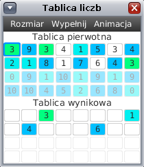

Funkcja specjalne

W osobnym oknie pojawiły się dwie tablice liczb. Górna tablica służy tylko do
wprowadzania liczb i prezentuje stan tablicy przed uruchomieniem programu.
Natomiast dolna tablica jest po starcie programu wypełniona liczbami z górnej
tablicy i prezentuje stan tablicy w trakcie działania programu. Twoja funkcja
„uporzadkuj” powinna posortować liczby w tej dolnej tablicy liczb, aby tego
dokonać funkcja „uporzadkuj” powinna wykorzystywać funkcję specjalną
„void scal(idx1, idx2, idx3)”, która jest omówiona poniżej.
Funkcja „void scal(idx1, idx2, idx3)”
Funkcja „void scal(idx1, idx2, idx3)” służy do scalenia dwóch posortowanych
framentów tablicy. Jako parametr funkcja przyjmuje trzy indeksy:
idx1, idx2, idx3. Indeksy powinny spełniać następujący warunek:
idx1 < idx2 < idx3. Ponadto parametr idx1 powinien
być nieujemny, a parametr idx3 nie powinien przekraczać rozmiaru tablicy.
Jeśli jakiś wyżej wymieniony warunek nie będzie spełniony, funkcja zwróci błąd
i program przerwie swoje działanie. Podane trzy parametry powinny wyznaczać dwa
spójne fragmenty tablicy. Pierwszy fragment począwszy od indeksu idx1
aż do indeksu idx2-1, drugi fragment począwszy od indeksu idx2
aż do indeksu idx3-1. Podane dwa fragmenty tabliy powinny być uporządkowane
(inaczej funkcja zwróci błąd). Funkcja „scal” przestawia elementy we fragmencie
[idx1, idx3), w taki sposób, iż po zakończeniu tej funkcji
elementy w tym fragmencie są uporządkowane. Na rusunku powyżej, pokazaliśmy
wywołanie funkcji „scal(4, 8, 12)”.